전기기사 (2009-05-10 기출문제)
1과목: 전기자기학
1. 단면적 s[m2], 단위 길이에 대한 권수가 n[회/m]인 무한히 긴 솔레노이드와 단위 길이당의 자기인덕턴스[H/m]는 어떻게 표현되는가?
- μ·s·n
- μ·s·n2
- μ·s2·n2
- μ·s2·n
(정답률: 83%)

2. 다음 설명 중 잘못된 것은?
- 초전도체는 임계온도 이하에서 완전 반자성을 나타낸다.
- 자화의 세기는 단위 면적당의 자기 모멘트이다.
- 상자성체에서 자극 N극을 접근시키면 S극이 유도된다.
- 니켈, 코발트 등은 강자성체에 속한다.
(정답률: 63%)
3. 정전계와 반대방향으로 전하를 2m 이동시키는데 240J의 에너지가 소모되었다. 이 두 점 사이의 전위치가 60v 이면, 전하의 전기량은 몇 [C]인가?
- 1
- 2
- 4
- 8
(정답률: 51%)
4. 그림과 같이 무한히 긴 두 개의 직선상 도선이 1m 간격으로 나란히 놓여 있을 때 도선 ①에 4A, 도선 ②에 8A가 흐르고 있을 때 두 선간 중앙점 P에 있어서의 자계의 세기는 몇 [A/m]인가? (단, 지면의 아래쪽에서 위쪽으로 향하는 방향을 점 (＋)으로 한다.)
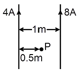
- 4/π
- 12/π
- -(4/π)
- -(5/π)
(정답률: 56%)
5. 코일 A 및 코일 B가 있다. 코일 A의 전류가 1/30초간에 10[A] 변화할 때 코일 B에 10[V]의 기전력을 유도한다고 한다. 이때의 상호 인덕턴스는 몇 [H]인가?
- 1/0.3
- 1/3
- 1/30
- 1/300
(정답률: 70%)
6. 비유전율 ℇs=80, 비투자율 μs=1인 전자파의 고유 임피던스는 약 몇 [Ω]인가?
- 21Ω
- 42Ω
- 80Ω
- 160Ω
(정답률: 76%)
7. 다음 중 강자성체가 아닌 것은?
- 코발트
- 니켈
- 철
- 구리
(정답률: 73%)
8. 직교하는 도체평면과 점전하 사이에는 몇 개의 영상전하가 존재하는가?
- 2
- 3
- 4
- 5
(정답률: 53%)
9. 그림에서 질량 m[㎏], 전기량 q[C]인 대전입자가 속도v[m/s]로 지면에 수직인 균등자장 B[Wb/m3]에 들어올 때, 입자는 원운동을 시작한다. 이 원운동의 각속도 ω는 몇 [rad/sec]인가?
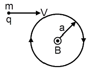
- ω=(qB)/(2πm)
- ω=(qB)/m
- ω=(2πm)/(qB)
- ω=mqB
(정답률: 39%)
10. 콘덴서의 내압 및 정전용량이 각각 1000V-2μF, 700V-3μF, 600V-4μF, 300V-8μF이다. 이 콘덴서를 직렬로 연결 할 때, 양단에 인가되는 전압을 상승시키면 제일 먼저 절연이 파괴되는 콘덴서는?
- 1000V-2μF
- 700V-3μF
- 600V-4μF
- 300V-8μF
(정답률: 80%)
11. 압전기 현상에서 분극이 응력에 수직한 방향으로 발생하는 효과는?
- 종효과
- 횡효과
- 역효과
- 직접효과
(정답률: 77%)
12. 다음 중 기자력에 대한 설명으로 옳지 않은 것은?
- 전기회로의 기전력에 대응한다.
- 코일에 전류를 흘렸을 때 전류 밀도와 코일의 권수의 곱의 크기와 같다.
- 자기회로의 자기저항과 자속의 곱과 동일하다.
- SI 단위는 암페어[A]이다.
(정답률: 66%)
13. 도체나 반도체에 전류를 흘리고, 이것과 직각방향으로 자계를 가하면 이 두 방향과 직각방향으로 기전력이 생기는 현상을 무엇이라 하는가?
- 핀치효과
- 볼타효과
- 압전효과
- 홀효과
(정답률: 70%)
14. 200[V], 30[W]인 백열전구와 200[V], 60[W]인 백열전구를 직렬로 접속하고, 200[V]의 전압을 인가하였을 때 어느 전구가 더 어두운가? (단, 전구의 밝기는 소비전력에 비례한다.)
- 둘 다 같다.
- 30[W] 전구가 60[W] 전구보다 더 어둡다.
- 60[W] 전구가 30[W] 전구보다 더 어둡다.
- 비교할 수 없다.
(정답률: 73%)
15. 10㎜의 지름을 가진 동선에 50A의 전류가 흐를 때, 단위 시간에 동선의 단면을 통과하는 전자의 수는 약 몇 개인가?(오류 신고가 접수된 문제입니다. 반드시 정답과 해설을 확인하시기 바랍니다.)
- 7.85×1016
- 20.45×1015
- 31.25×1019
- 50×1019
(정답률: 66%)
16. 전계의 실효치가 377V/m인 평면전자파가 진공을 진행하고 있다. 이때 이 전자파에 수직되는 방향으로 설치된 단면적 10m3의 센서로 전자파의 전력을 측정하려고 한다. 센서가 1W의 전력을 측정하였을 때 1mA의 전류를 외부로 흘려준다면 전자파의 전력을 측정했을 때 외부로 흘려주는 전류는 몇 [mA]인가?
- 3.77mA
- 37.7mA
- 377mA
- 3770mA
(정답률: 46%)
17. 정전용량이 1[μF]인 공기콘덴서가 있다. 이 콘덴서 판 간의 1/2인 두께를 갖고, 비유전율 ℇr=2인 유전체를 그 콘덴서의 한 전극면에 접촉하여 넣었을 때, 전체의 정전용량은 몇[μF]이 되는가?
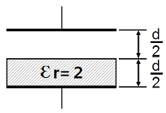
- 2μF
- 1/2μF
- 4/3μF
- 5/3μF
(정답률: 76%)
18. 전류 4π[A]가 흐르고 있는 무한직선도체에 의해 자계가 4[A/m]인 점은 직선도체로부터 거리가 몇 [m]인가?
- 0.5m
- 1m
- 3m
- 4m
(정답률: 66%)
19. 질량 m=10-10[㎏]이고 전하량 q=10-8[C]인 전하가 전기장에 의해 가속되어 운동하고 있다. 이 때 가속도 ɑ=102i＋103j[m/sec2]라 하면 전기장의 세기 E는 몇 [V/m]인가?
- E=104i＋105j
- E=i+10j
- E=10-2i＋10-7j
- E=10-6i＋10-5j
(정답률: 56%)
20. 도전율이 5.8×107℧/m, 비투자율이 1인 구리에 50Hz의 주파수를 갖는 전류가 흐를 때, 표피두께는 약 몇 [㎜]인가?
- 8.53
- 9.35
- 11.28
- 13.03
(정답률: 62%)
2과목: 전력공학
21. 다음 중 송전선로의 특성임피던스와 전파정수를 구하기 위한 시험으로 가장 적절한 것은?
- 무부하시험과 단락시험
- 부하시험과 단락시험
- 부하시험과 충전시험
- 충전시험과 단락시험
(정답률: 76%)
22. 전원이 양단에 있는 환상선로의 단락보호에 사용되는 계전기는?
- 방향거리 계전기
- 부족전압 계전기
- 선택접지 계전기
- 부족전류 계전기
(정답률: 78%)
23. 평균유효낙차 48m의 저수지식 발전소에서 1000m3의 저수량은 약 몇 [kWh]의 전력량에 해당하는가? (단, 수차 및 발전기의 종합효율은 약 85%라고 한다.)
- 111kWh
- 122kWh
- 133kWh
- 144kWh
(정답률: 54%)
24. 원자번호 92, 질량수 235인 우라늄 1g이 핵분열 함으로써 발생하는 에너지는 6000 kcal/㎏의 발열량을 갖는 석탄 몇 [t]에 상당하는가? (단, 우라늄 1g이 발생하는 에너지는 약 1965×104kcal이다.)
- 3.3t
- 32.7t
- 327.5t
- 3275t
(정답률: 47%)
25. 정전압 송전방식에서 전력원선도를 그리려면 무엇이 주어져야 하는가?
- 송수전단 전압, 선로의 일반회로정수
- 송수전단 전류, 선로의 일반회로정수
- 조상기 용량, 수전단 전압
- 송전단 전압, 수전단 전류
(정답률: 63%)
26. 배전선로의 고장 전류를 차단할 수 있는 것으로 가장 알맞은 것은?
- 단로기
- 구분 개폐기
- 컷아웃스위치
- 차단기
(정답률: 76%)
27. 승압기에 의하여 전압 Ve에서 Vh로 승압할 때, 2차 정격전압 e, 자기용량 W인 단상 승압기가 공급할 수 있는 부하 용량은 어떻게 표현되는가?
- (Vh/e)×W
- (Ve/e)×W
- (V/(Vh-Ve))×W
- ((Vh-Ve)/Ve)×W
(정답률: 67%)
28. 송전선에 복도체를 사용할 경우, 같은 단면적의 단도체를 사용하였을 경우와 비교할 때 옳지 않은 것은?
- 전선의 인덕턴스는 감소되고 정전용량은 증가된다.
- 고유 송전용량이 증대되고 정태안정도가 증대된다.
- 전선 표면의 전위경도가 증가한다.
- 전선의 코로나 개시전압이 높아진다.
(정답률: 48%)
29. 다음 중 송전선로의 역섬락을 방지하기 위한 대책으로 가장 알맞은 방법은?
- 가공지선을 설치함
- 피뢰기를 설치함
- 탑각저항을 낮게함
- 소호각을 설치함
(정답률: 72%)
30. 배전계통을 구성할 때 저압 뱅킹배전방식의 캐스케이딩 현상이란?
- 전압동요가 적은 현상
- 변압기의 부하 배분이 불균일한 현상
- 저압선이나 변압기에 고장이 생기면 자동적으로 고장이 제거되는 현상
- 저압선의 고장에 의하여 건전상의 변압기의 일부 또는 전부가 회로로부터 차단되는 현상
(정답률: 79%)
31. 부하 역률이 cosθ인 경우의 배전선로의 전력손실은 같은 크기의 부하 전력으로 역률이 1인 경우의 전력손실에 비하여 몇 배인가?
- 1/(cos2θ)
- 1/(cosθ)
- cosθ
- cos2θ
(정답률: 78%)
32. 그림과 같은 3상 3선식 전선로의 단락점에 있어서의 3상 단락전류는 약 몇 [A]인가? (단, 66kV에 대한 %리액턴스는 10%이고, 저항분은 무시한다.)
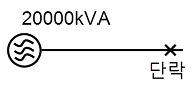
- 1750
- 2000
- 2500
- 3030
(정답률: 63%)
33. 이상전압의 파고치를 저감시켜 기기를 보호하기 위하여 설치하는 것은?
- 리액터
- 아아모 로드(Armour rod)
- 피뢰기
- 아킹 호온(Arcing horn)
(정답률: 74%)
34. 3상 3선식 송전선로가 있다. 전선 한 가닥의 저항은 10Ω, 리액턴스는 20Ω이고, 수전단의 선간전압은 60kV, 부하역률은 0.8(늦음)이다. 전압강하율은 5%로 하면 이 송전선로로 약 몇 [kW]까지 수전할 수 있는가?
- 6200kW
- 7200kW
- 8200kW
- 9200kW
(정답률: 62%)
35. 전력용 피뢰기에서 직렬 갭(gap)의 주된 사용 목적은?
- 방전내량을 크게 하고 장시간 사용하여도 열화를 적게 하기 위함
- 충격방전 개시전압을 높게하기 위함
- 상시는 누설전류를 방지하고 충격파 방전 종류 후에는 속류를 즉시 차단하기 위함
- 충격파가 침입할 때 대지에 흐르는 방전전류를 크게 하여 제한전압을 낮게하기 위함
(정답률: 70%)
36. 코로나 현상에 대한 설명으로 거리가 먼 것은?
- 소호리액터의 소호 능력이 저하된다.
- 전선 지지점 등에서 전선의 부식이 발생한다.
- 공기의 절연성이 파괴되어 나타난다.
- 전선의 전위경도가 40kV/cm 이상일 때부터 나타난다.
(정답률: 69%)
37. 선로의 길이가 250km인 3상 3선식 송전선로가 있다. 중성선에 대한 1선 1km의 리액턴스는 0.5Ω, 용량 서셉턴스는 3×10-6℧이다. 이 선로의 특성임피던스는 약 몇 [Ω]인가?
- 366Ω
- 408Ω
- 424Ω
- 462Ω
(정답률: 58%)
38. 3상송전선로의 고장에서 1선지락사고 등 3상 불평형 고장 시 사용되는 계산법은?
- 옴 법에 의한 계산
- %법에 의한 계산
- 단위(PU)법에 의한 계산
- 대칭 좌표법
(정답률: 60%)
39. 선로 고장 발생 시 타 보호기기와의 협조에 의해 고장 구간을 신속히 개방하는 자동구간 개폐기로서 고장 전류를 차단할 수 없어 차단 기능이 있는 후비보호장치와 직렬로 설치되어야 하는 배전용 개폐기는?
- 배전용 차단기
- 부하 개폐기
- 컷아웃 스위치
- 섹셔널라이저
(정답률: 76%)
40. 화력발전소에서 열사이클의 효율향상을 기하기 위하여 채용되는 방법으로 볼 수 없는 것은?
- 조속기를 설치한다.
- 재생재열 사이클을 채용한다.
- 절탄기, 공기예열기를 설치한다.
- 고압, 고온 증기의 채용과 과열기를 설치한다.
(정답률: 69%)
3과목: 전기기기
41. 단상 전파 정류회로에서 저항부하일 때의 맥동률[%]은 약 얼마인가?
- 0.45
- 0.17
- 17
- 48
(정답률: 59%)
42. 변류비 100/5[A]의 변류기[CT]와 5[A]의 전류계를 사용해서 부하 전류를 측정한 경우 전류계의 지시가 4[A]이었다. 이 때 부하 전류는 몇 [A]인가?
- 20
- 40
- 60
- 80
(정답률: 63%)
43. 직류 직권 전동기의 회전수를 반으로 줄이면 토크는 몇 배가 되는가?
- 0.25
- 0.5
- 4
- 2
(정답률: 44%)
44. 변압기에서 발생하는 손실 중 1차측이 전원에 접속되어 있으면 부하의 유무에 관계없이 발생하는 손실은?
- 동손
- 표유부하손
- 철손
- 부하손
(정답률: 67%)
45. 2대의 직류 발전기를 병렬 운전할 때 필요조건 중 잘못된 것은?
- 정격전압이 같을 것
- 극성이 일치할 것
- 유도기전력이 같을 것
- 외부특성이 같을 것
(정답률: 58%)
46. 다음 농형 유도전동기에 주로 사용되는 속도 제어법은?
- 극수 제어법
- 2차여자 제어법
- 2차저항 제어법
- 종속 제어법
(정답률: 72%)
47. 8극의 3상 유도 전동기가 60[Hz]의 전원에 접속되어 운전할 때 864[rpm]의 속도로 494[N·m]의 토크를 낸다. 이때의 동기와트[W]값은 약 얼마인가?
- 76214
- 53215
- 46558
- 34761
(정답률: 55%)
48. 3상 전압조정기의 원리는 어느 것을 응용한 것인가?
- 3상 동기 발전기
- 3상 변압기
- 3상 유도 전동기
- 3상 교류자 전동기
(정답률: 67%)
49. 동기 발전기에서 자기 여자 방지법이 되지 않는 것은?
- 전기자 반작용이 적고 단락비가 큰 발전기를 사용한다.
- 발전기를 여러 대 병렬로 사용한다.
- 송전선 말단에 리액터나 변압기를 사용한다.
- 송전선 말단에 동기조상기를 접속하고 계자 권선에 과여자한다.
(정답률: 59%)
50. 권수비가 70인 단상변압기의 전부하 2차 전압은 200[V], 전압변동률이 4[%]일 때, 무부하시 1차 단자전압은 몇 [V]인가?
- 11670
- 12360
- 13261
- 14560
(정답률: 69%)
51. 직류 전동기 중 전기철도에 가장 적합한 전동기는?
- 분권 전동기
- 직권 전동기
- 복권 전동기
- 자여자 분권 전동기
(정답률: 77%)
52. 6000[V], 5[MVA]의 3상 동기 발전기의 계자전류 200[A]에서의 무부하 단자전압이 6000[V]이고, 단락전류는 600[A]라고 한다. 동기 임피던스[Ω]와 % 동기임피던스는 각각 약 얼마인가?
- 5.8, 80
- 6.4, 85
- 6.4, 73
- 6.0, 75
(정답률: 45%)
53. 전압이 정상치 이상으로 되었을 때 회로를 보호하려는 동작으로 기기 설비의 보호에 사용되는 계전기는?
- 지락 계전기
- 방향 계전기
- 과전압 계전기
- 거리 계전기
(정답률: 73%)
54. 다음 중 VVVF(Variable Voltage Variable Frequency)제어방식에 가장 적당한 속도 제어는?
- 동기 전동기의 속도제어
- 유도 전동기의 속도제어
- 직류 직권전동기의 속도제어
- 직류 분권전동기의 속도제어
(정답률: 70%)
55. 3상 동기 발전기의 매극, 매상의 슬롯수를 3이라 하면 분포 계수는?
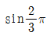
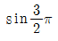
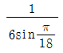
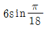
(정답률: 77%)
56. 유도 전동기의 원선도에서 원의 지름은? (단, E를 1차 전압, r은 1차로 환산한 저항, x를 1차로 환산한 누설 리액턴스라 한다.)
- rE에 비례
- rxE에 비례
- E/r에 비례
- E/x에 비례
(정답률: 61%)
57. 50[kVA], 3300/210[V], 60[hz]의 단상 변압기가 있다. 1차 권수 660, 철심 단면적 161[cm2]이다. 자속밀도는 약 몇 [Wb/m3]인가?
- 1.41
- 1.16
- 1.02
- 0.98
(정답률: 62%)
58. 반파 정류회로에서 순저항 부하에 걸리는 직류 전압의 크기가 200[V]이다. 다이오드에 걸리는 최대 역전압의 크기는 약 몇 [V]인가?
- 400
- 479
- 512
- 628
(정답률: 64%)
59. 전기자 총 도체수 152, 4극, 파권인 직류 발전기가 전기자 전류를 100A로 할 때, 매극당 감자 기자력[AT/극]은 얼마인가? (단, 브러시의 이동각은 10º이다)
- 33.6
- 52.8
- 1⑤.6
- 211.2
(정답률: 47%)
60. 정격용량 1000[kVA]인 동기 발전기가 역률이 0.8인 500[kW]의 부하에 전력을 공급하고 있다. 이 발전기가 정격상태가 될 때까지는 100[W]의 전구를 약 몇 개나 사용할 수 있는가?
- 42
- 427
- 4270
- 42700
(정답률: 51%)
4과목: 회로이론 및 제어공학
61. 다음과 같은 4단자 회로에서 임피던스 파라미터 Z11의 값은?
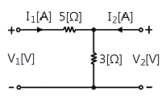
- 8[Ω]
- 5[Ω]
- 3[Ω]
- 2[Ω]
(정답률: 62%)
62. R=2[Ω], L=10[mH], C=4[μF],의 직렬 공진회로의 Q는 얼마인가?
- 20
- 25
- 45
- 50
(정답률: 65%)
63. a, b 양단에 220[v] 전압을 인가 시 전류 I가 1[A]흘렀다면, R의 저항은 몇 [Ω]인가?
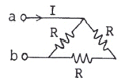
- 100[Ω]
- 150[Ω]
- 220[Ω]
- 330[Ω]
(정답률: 53%)
64. 다음 회로에서 저항 R에 흐르는 전류 (I)는 몇 [A]인가?
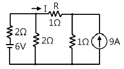
- 2[A]
- 1[A]
- -2[A]
- -1[A]
(정답률: 59%)
65. 기본파의 40%인 제 3고조파와 30[%]인 제5고조파를 포함하는 전압파의 왜형률은 얼마인가?
- 0.3
- 0.5
- 0.7
- 0.9
(정답률: 63%)
66. 다음의 회로에서 S를 닫은 후 t= 1[s]일 때, 회로에 흐르는 전류는 약 몇 [A]인가?
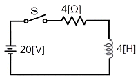
- 0.25[A]
- 3.16[A]
- 4.16[A]
- 5.16[A]
(정답률: 59%)
67. 전송선로의 특성 임피던스가 100[Ω]이고, 부하저항이 400[Ω]일 때, 전압 정재파비 S는 얼마인가?
- 0.25
- 0.6
- 1.67
- 4
(정답률: 55%)
68. 회로의 전압비 전달함수 H(jω)=[Vc(jω)]/[V(jω)]는?
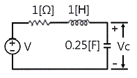
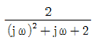
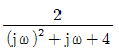
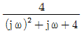
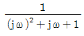
(정답률: 60%)
69. 각상의 임피던스가 각각 Z=6＋j8[Ω]인 평형 Δ부하에 선간 전압이 220[V]인 대칭 3상전압을 인가할 때의 선전류는 약 몇 [A]인가?
- 27.2[A]
- 38.1[A]
- 22[A]
- 12.7[A]
(정답률: 62%)
70. sinωt의 라플라스 변환은?
- S/(S2＋ω2)
- ω/(S2＋ω2)
- S/(S2-ω2)
- ω/(S2-ω2)
(정답률: 66%)
71. 다음 지상 네트워크의 전달함수는?
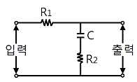
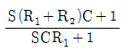
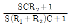
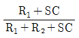
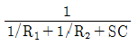
(정답률: 66%)
72. 어떤 제어계의 전달함수 G(S)=S/((S＋2)(S2＋2S＋2))에서 안정성을 판별하면?
- 안정하다.
- 불안정하다.
- 임계상태이다.
- 알 수 없다.
(정답률: 72%)
73. G(jω)=10(jω)＋1에서 절점 각주파수 ω0[rad/sec]는?
- 0.1
- 1
- 10
- 100
(정답률: 63%)
74. 주파수 전달함수 G(jω)=1/(j100ω)인 제어계에서 ω=0.1[rad/S]일 때의 이득[dB]과 위상차는?
- 40, 90º
- -40, -90º
- -20, -90º
- 20, 90º
(정답률: 59%)
75. 다음 신호흐름 선도에서 C(s)/R(s)의 값은?
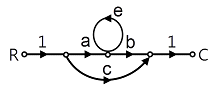
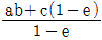
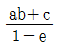
- ab+c
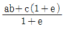
(정답률: 53%)
76. 그림과 같은 블록선도에서 전달 함수는?
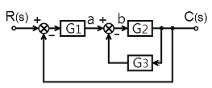
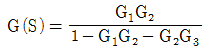
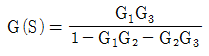
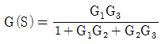
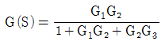
(정답률: 72%)
77. 다음 z 변환에서 최종치 정리를 나타낸 것은?
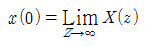
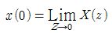
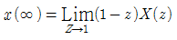
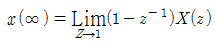
(정답률: 50%)
78. 선형 시불변 시스템의 상태방정식
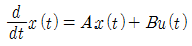
에서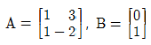
일 때, 특성 방정식은?- s2＋s-5=0
- s2-s-5=0
- s2＋3s＋1=0
- s2-3s＋1=0
(정답률: 61%)
79. 다음 중 피드백 제어계의 일반적인 특징이 아닌 것은?
- 비선형 왜곡이 감소한다.
- 구조가 간단하고 설치비가 저렴하다.
- 대역폭이 증가한다.
- 계의 특성 변화에 대한 입력 대 출력비의 감도가 감소한다.
(정답률: 70%)
80. 다음 논리식
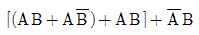
를 간단히 하면?- A+B
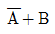
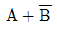
- A+A∙B
(정답률: 63%)
5과목: 전기설비기술기준 및 판단기준
81. 사용전압이 22900V인 가공전선이 삭도와 제 1차 접근 상태로 시설되는 경우, 가공전선과 삭도 또는 삭도용 지주 사이의 이격거리는 몇 [m] 이상이어야 하는가? (단, 가공전선으로는 나전선을 사용한다고 한다.)
- 0.5
- 1.0
- 1.5
- 2.0
(정답률: 38%)
82. 변압기의 안정권선이나 유휴권선 또는 전압조정기의 내장권선을 이상전압으로부터 보호하기 위하여 특히 필요할 경우에 그 권선에 접지공사를 할 때에는 몇 종 접지공사를 하여야 하는가?(오류 신고가 접수된 문제입니다. 반드시 정답과 해설을 확인하시기 바랍니다.)
- 제 1종 접지공사
- 제 2종 접지공사
- 제 3종 접지공사
- 특별 제 3종 접지공사
(정답률: 36%)
83. 특별고압 옥내전기설비를 시설할 때 사용전압은 일반적인 경우 최대 몇 [V]이하인가? (단, 케이블 트레이공사 제외)
- 100000
- 170000
- 250000
- 345000
(정답률: 56%)
84. 고압전로 또는 특별고압 전로와 저압전로를 결합하는 변압기의 저압측의 중성점의 접지공사는?(오류 신고가 접수된 문제입니다. 반드시 정답과 해설을 확인하시기 바랍니다.)
- 제 1종 접지공사
- 제 2종 접지공사
- 제 3종 접지공사
- 특별 제 3종 접지공사
(정답률: 48%)
85. 플로어덕트공사에 의한 저압 옥내배선에서 연선을 사용하지 않아도 되는 전선(동선)의 단면적은 최대 몇 [㎜2]인가?
- 2.5mm2
- 4mm2
- 6mm2
- 10mm2
(정답률: 42%)
86. 옥내에 시설하는 전동기에 과부하 보호장치의 시설을 생략할 수 없는 경우는?
- 정격 출력이 0.75kW인 전동기
- 전동기의 구조나 부하의 성질로 보아 전동기가 소손 할 수 있는 과전류가 생길 우려가 없는 경우
- 전동기가 단상의 것으로 전원측 전로에 시설하는 배선용 차단기의 정격전류가 20A 이하인 경우
- 전동기가 단상의 것으로 전원측 전로에 시설하는 과전류 차단기의 정격전류가 15A 이하인 경우
(정답률: 60%)
87. 특별고압 지중전선과 지중약전류 전선이 접근 또는 교차되는 경우에 견고한 내화성의 격벽을 시설하였다면 두 전선간의 이격거리는 몇 [cm] 이하인 경우로 볼 수 있는가?
- 30cm
- 40cm
- 50cm
- 60cm
(정답률: 40%)
88. 자동차단기가 설치되어 있지 않는 전로에 접속된 440V용 전동기의 외함을 접지할 때 그 접지 저항값은 몇 [Ω] 이하이어야 하는가?
- 5Ω
- 10Ω
- 50Ω
- 100Ω
(정답률: 52%)
89. 폭발성 또는 연소성의 가스가 침입할 우려가 있는 것에 지중함을 설치할 경우 지중함의 크기가 몇 [m3] 이상이면 통풍장치 기타 가스를 방산시키기 위한 적당한 장치를 시설하여야 하는가?
- 0.9m3
- 1.0m3
- 1.5m3
- 2.0m3
(정답률: 70%)
90. 특별고압 가공전선로에서 양측의 경간의 차가 큰 곳에 사용하는 철탑의 종류는?
- 내장형
- 직선형
- 인류형
- 보강형
(정답률: 71%)
91. 전력용 캐패시터의 내부에 고장이 생긴 경우 및 과전류 또는 과전압이 생긴 경우에 자동적으로 전로로부터 차단하는 장치가 필요한 뱅크 용량은 몇 [kVA] 이상인 것인가?
- 1000kVA
- 5000kVA
- 10000kVA
- 15000kVA
(정답률: 52%)
92. 고주파 이용 설비에서 다른 고주파 이용 설비에 누설되는 고주파 전류의 허용한도는 기준에 따라 측정하였을 때 각각 측정치의 최대치의 평균치가 몇 [dB] 이어야 하는가? (단, 1mW를 0dB로 한다.)
- 20dB
- -20dB
- -30dB
- 30dB
(정답률: 44%)
93. 다음 중 전로의 중성점을 접지하는 주목적으로 볼 수 없는 것은?
- 전로의 보호장치의 확실한 동작의 확보
- 부하 전류의 일부를 대지로 흐르게 함으로써 전선 절약
- 이상 전압의 억제
- 대저전압의 저하
(정답률: 58%)
94. "지중전선로는 기설 지중약전류 전선로에 대하여 ( ㉮ ) 또는 ( ㉯ ) 에 대하여 통신상의 장해를 주지 않도록 기설 약전류 전선로로부터 충분히 이격시키거나 적당한 방법으로 시설하여야 한다." ( ㉮ ), ( ㉯ ) 에 들어갈 내용으로 알맞은 것은?
- 정전용량, 표피작용
- 정전용량, 유도작용
- 누설전류, 표피작용
- 누설전류, 유도작용
(정답률: 59%)
95. 특별고압 가공전선로의 전선으로 케이블을 사용하는 경우의 시설로서 옳지 않은 것은?
- 케이블은 조가용선에 행거에 의하여 시설한다.
- 케이블은 조가용선에 접촉시키고 비닐테이프 등을 30cm 이상의 간격으로 감아 붙인다.
- 조가용선은 단면적 22mm2의 아연도강연선 또는 인장강도 13.93kN 이상의 연선을 사용한다.
- 조가용선 및 케이블의 피복에 사용하는 금속체에는 제3종 접지공사를 한다.
(정답률: 60%)
96. 수소냉각식 발전기안 또는 조상기안의 수소의 순도가 몇 [%]이하로 저하한 경우 이를 경보하는 장치를 시설하도록 하고 있는가?
- 90%
- 85%
- 80%
- 75%
(정답률: 64%)
97. 배류시설로 강제배류기를 설치할 때 강제배류기용 전원장치로 사용되는 변압기는 어떤 변압기인가?
- 절연변압기
- 누설변압기
- 단권변압기
- 정류용변압기
(정답률: 43%)
98. 특수 장소에 시설하는 전선로의 기준으로 옳지 않은 것은?
- 교량의 윗면에 시설하는 저압 전선로는 교량 노면상 5m 이상으로 할 것
- 합성수지관, 금속관 공사 또는 케이블 공사에 의해 교량의 아랫면에 저압전선로를 시설할 수 있으나, 가요 전선관 공사에 의해 시설할 수 없다.
- 벼랑과 같은 수직 부분에 시설하는 전선로는 부득이한 경우에 시설하며, 이때 전선의 지지점간의 거리는 15m 이하 이어야한다.
- 저압전선로와 고압전선로를 같은 벼랑에 시설하는 경우고압전선과 저압전선 사이의 이격거리는 50cm 이상일 것
(정답률: 32%)
99. 옥내에 시설하는 사용전압 400V 이상 1000V 이하인 전개된 장소로서 건조한 장소가 아닌 기타의 장소의 관등회로 배선공사로서 적합한 것은?
- 애자사용 공사
- 합성수지 몰드 공사
- 금속몰드 공사
- 금속덕트 공사
(정답률: 46%)
100. 과전류차단기로 저압전로에 사용하는 80A 퓨즈는 수평으로 붙일 경우 정격전류의 1.6배 전류를 통한 경우에 몇 분 안에 용단되어야 하는가?
- 30분
- 60분
- 120분
- 180분
(정답률: 57%)